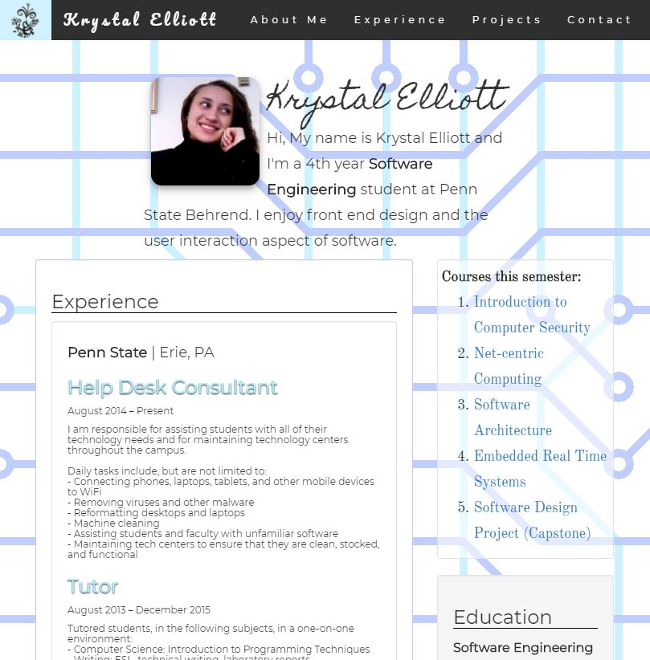
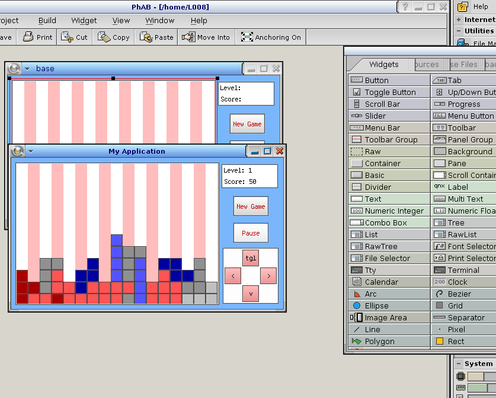
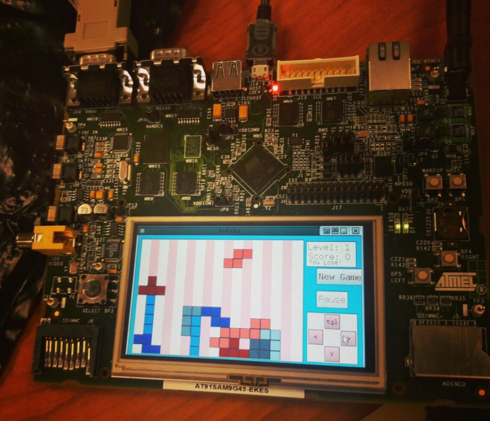

<div class="mdl-grid portfolio-max-width">
    <div class="mdl-cell mdl-cell--12-col mdl-card mdl-shadow--4dp">
        <div class="mdl-card__title">
            <h2 class="mdl-card__title-text">Portfolio</h2>
        </div>
        <div class="mdl-card__media">
            <div class="article-border"></div>
        </div>
        <div class="mdl-card__supporting-text">
            <strong>Includes</strong>
            <span>Various development projects and endeavours. <a href="mailto:e.krystal@gmail.com">Contact me</a> to learn more.</span>
        </div>
        <div class="mdl-grid portfolio-copy">
            <h3 class="mdl-cell mdl-cell--12-col mdl-typography--headline">BroBot the Boe-Bot</h3>
            <div class="mdl-cell mdl-cell--6-col">
                
            </div>
            <div class="mdl-cell mdl-cell--6-col mdl-card__supporting-text no-padding">
                <p>I'm a Software Engineer by trade, but I always get really excited when I have the opportunity to tinker with hardware. Cue <b>Brobot</b> the Boe-Bot. I bought this robotics kit to become more familiar with embedded programming and robotics. Brobot uses a Parallax BASIC Stamp 2 microcontroller to interface with touch, light, and infrared sensors. These sensors help Brobot navigate his environment.  
                </p>
            </div>
            <h3 class="mdl-cell mdl-cell--12-col mdl-typography--headline">Senior Project</h3>
            <div class="mdl-cell mdl-cell--6-col mdl-card__supporting-text no-padding">
                <p>My senior project focused on supervised machine learning, utilizing <a href="https://www.ibm.com/watson/" target="_blank">IBM Watson</a> to create a virtual advisor who could assist prospective students with academic planning. My team participated in the <a href="https://www.edtechnetwork.psu.edu/news/nittany-watson-challenge-top-10-proposals">Nittany Watson Challenge</a>, creating a minimum viable product that would advance several rounds, and secure funding for further research and development.</p>
                <p>My former instructor, Mr. Ronald DelPorto, was kind enough to attend my capstone presentation and record part of it. During this presentation, I established a scenario to guide the audience through the use of our system.</p>
                <a href="https://www.youtube.com/watch?v=3gAqwNpoJxA">Intelligent Academic Advisor, Part I</a><br/>
                <a href="https://www.youtube.com/watch?v=kRPAQEqDL0o">Intelligent Academic Advisor, Part II</a>
            </div>
            <div class="mdl-cell mdl-cell--6-col">
                <iframe width="560" height="315" src="https://www.youtube.com/embed/3gAqwNpoJxA" frameborder="0" allow="autoplay; encrypted-media" allowfullscreen></iframe>
            </div>
            <h3 class="mdl-cell mdl-cell--12-col mdl-typography--headline">College Portfolio Site</h3>
            <div class="mdl-cell mdl-cell--6-col">
                
            </div>
            <div class="mdl-cell mdl-cell--6-col mdl-card__supporting-text no-padding ">
                <p>When I was in college, I started learning about front end frameworks. My professors recommended having a web presence, so I used <a href="https://getbootstrap.com/">Bootstrap</a> to create a page with my at-the-time resume and some information pertaining to projects, classes, and interests.</p>
                <a href="http://personal.psu.edu/kye5098/portfolio/">College Portfolio</a>
            </div>
            <h3 class="mdl-cell mdl-cell--12-col mdl-typography--headline">Tetris in C</h3>
            <div class="mdl-cell mdl-cell--6-col">
                
            </div>
            <div class="mdl-cell mdl-cell--6-col">
                
            </div>
            <div class="mdl-cell mdl-cell--12-col mdl-card__supporting-text no-padding ">
                <p>
                    During senior year, I had an Embedded Systems course, in which I was to program <a href="https://krystropolis.blogspot.com/2017/04/united-blocks-of-america.html#more">Tetris</a>. We used QNX RTOS and C for this course. This was developed in several stages. The first stage involved a GUI design and shape creation. The second stage entailed controlling shape movement and establishing bounds. The third stage required a slight redesign of the GUI because the initial dimensions given to us were incorrect. Finally, we worked on line clearing, shape rotation, and sound implementation.<br/>Correction: The final stage was competing to become the ultimate Tetris champion. 
                </p>
            </div>
        </div>
    </div>
</div>